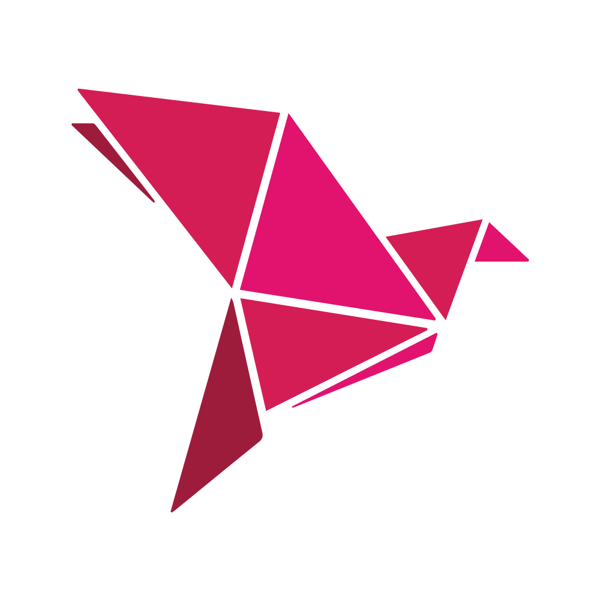
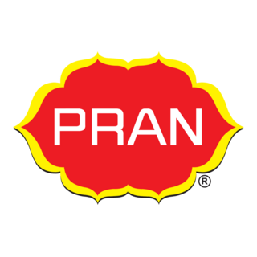

Company Name : Bkash Company Ltd
Duration : January 2024 - June 2024
Worked Experience :
Worked with bKash Limited as a junior technology trainee, where I gained hands-on experience in digital financial systems and customer oriented services. I learned how secure transactions are managed and how large-scale fintech platforms operate. This experience helped me improve my technical understanding and problem-solving abilities in a professional environment.
Company Name : TechSolutions Ltd
Duration : August 2025 - January 2025
Worked Experience :
Worked as a web development intern, learned HTML, CSS, JavaScript, collaborated with team members to create responsive web pages, improved problem-solving skills and communication skills. This experience also strengthened my ability to adapt to new technologies and work efficiently in a professional team environment.
Company Name : PRAN Group Ltd
Duration : April 2025 - September 2025
Worked Experience :
Worked with PRAN Group Ltd as a junior operations assistant, where I gained practical experience in corporate operations and production related activities. I learned how large scale manufacturing and distribution systems operate and how teamwork plays a vital role in maintaining efficiency. This experience helped me improve my organizational skills, communication abilities and discipline.